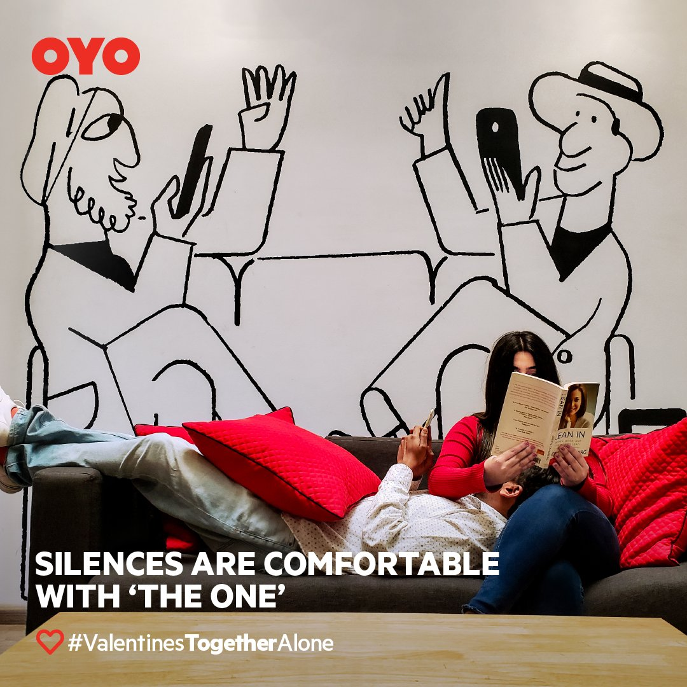
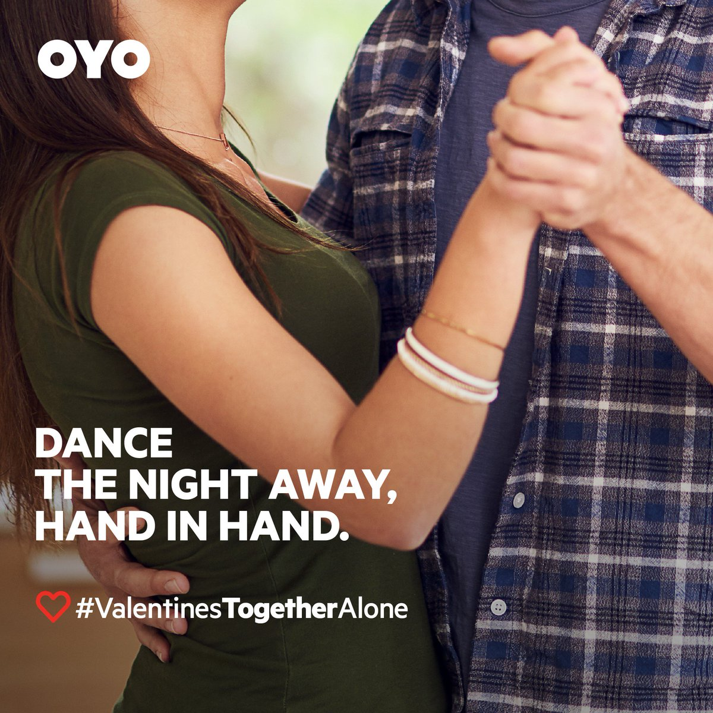
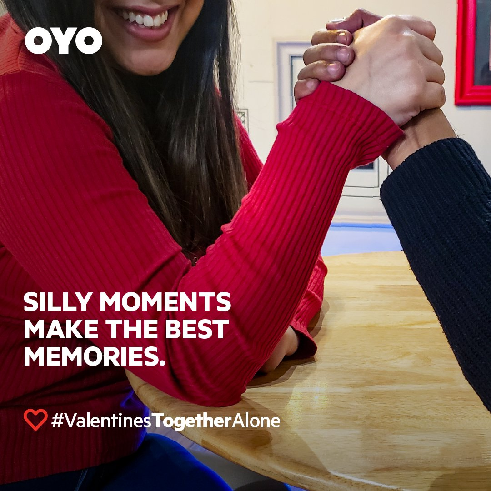
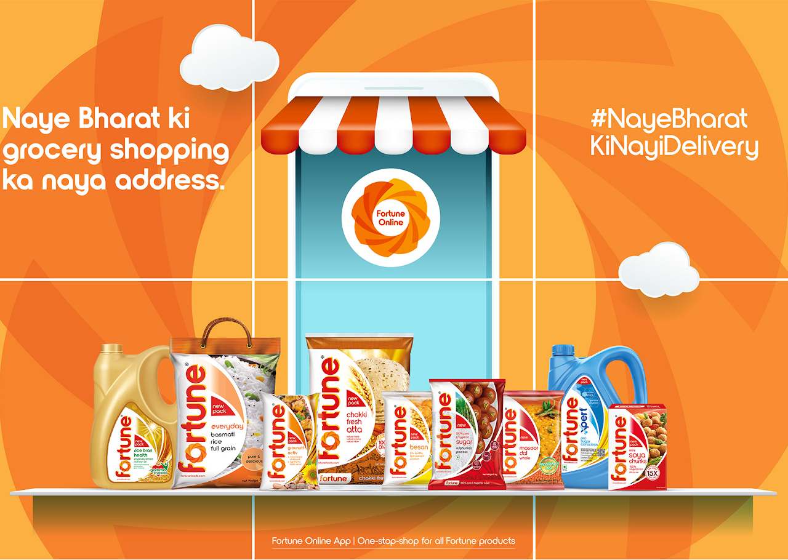
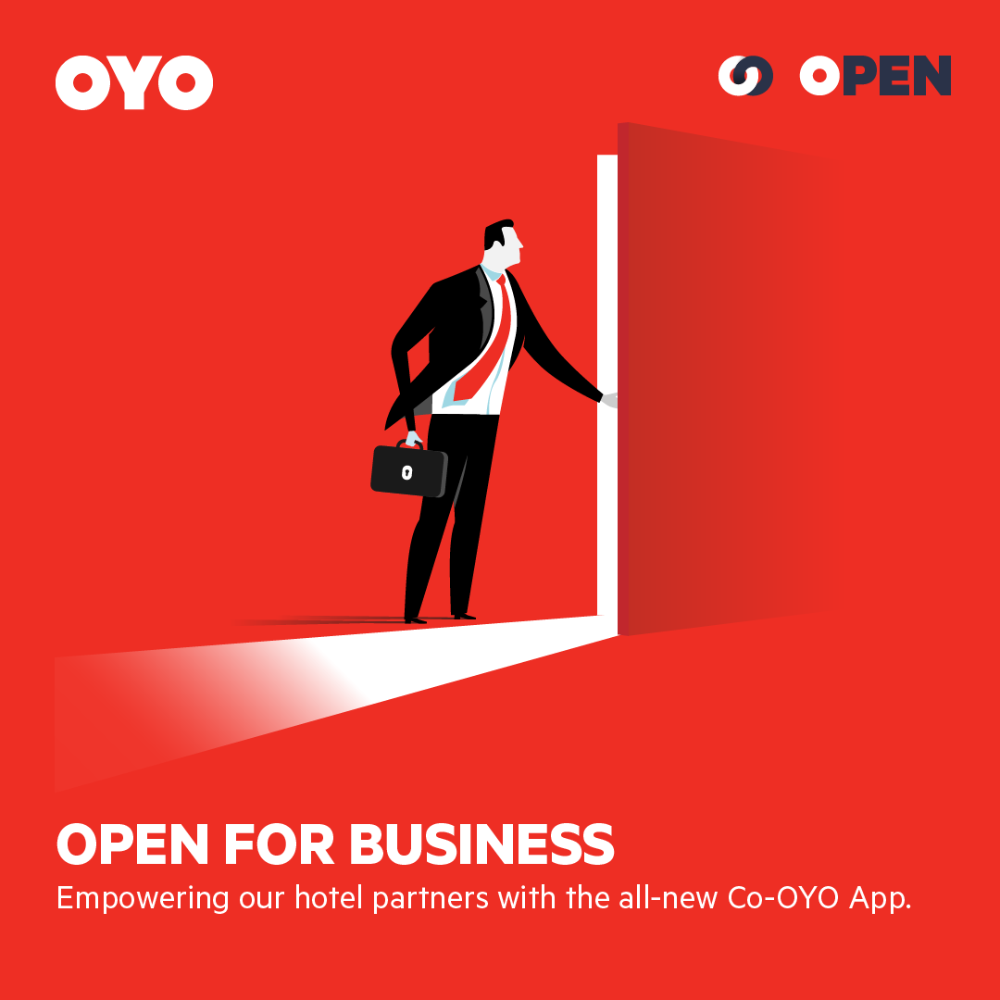
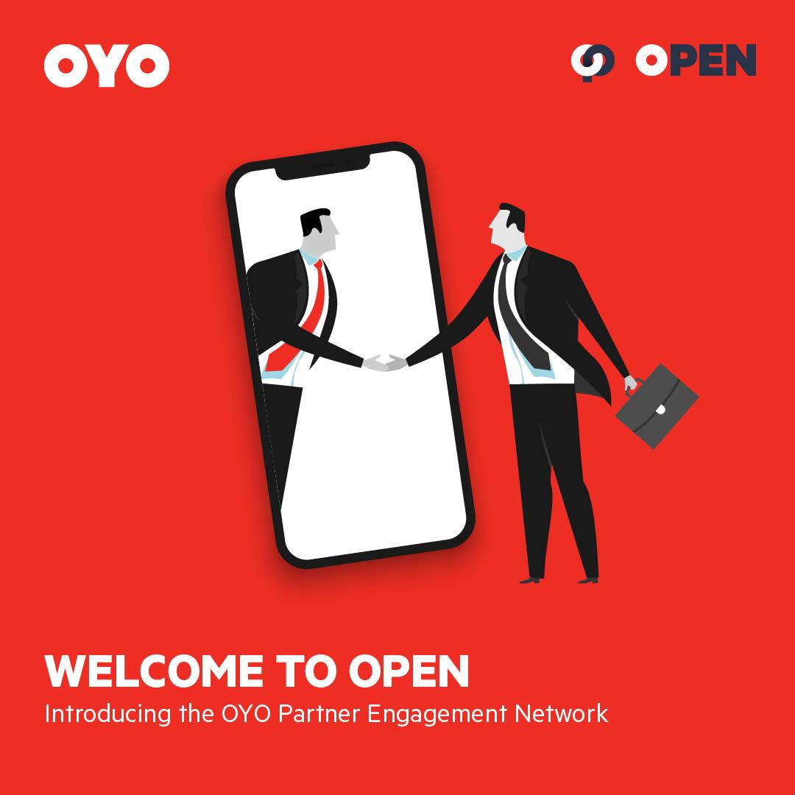

A communication mandate larger than a single campaign.
At OYO, the brand challenge was not just seasonal visibility. It was narrative breadth. The business needed to speak credibly to multiple audiences at once — consumers, hotel partners, media, leadership stakeholders, and employees — without fragmenting the core message.
The work was therefore designed as an integrated set of communication systems: market-facing brand storytelling, product and trust communication, partner engagement, and internal clarity architecture.
Valentine’s Day 2019:
From romance to companionship.
Objective
- Reposition Valentine’s Day beyond couples.
- Normalize celebration with friends, family, and solo travellers.
- Build emotional affinity and organic social participation.
Execution
Brand, offline marketing, conversions, PR, and OYO Townhouse teams aligned on one message architecture.
A 14-day social content sequence across Facebook and Instagram to sustain momentum.
Influencer stays at OYO Homes combined with user-generated content amplification.
Launched OYO Love Index 2019 from booking insights to validate the cultural shift with evidence.
"February 14 is no longer only about couples; it is increasingly a companionship occasion across social groups."





Performance
- 7+ lakh organic impressions.
- ~6,000 new followers.
- ~5% engagement rate.
- 112% increase in bookings vs same period previous year.
- Booking mix: 63% couples, 22% friends/family (high-growth segment).
- Goa emerged as top couples destination, followed by Delhi and Bangalore.
OPEN Partner Privilege Program:
Turning an event into a brand signal.
The Partner Privilege Program launch needed more than event management. It required operational readiness, leadership alignment, partner participation, and media coherence under one narrative about relationship-first growth.



Execution Scope
- Event design, production flow, and vendor management.
- Cross-functional leadership alignment (Founders’ Office, business, operations, tech).
- Media coordination, press interactions, and narrative reinforcement.
- Partner education communication to support onboarding and product usage.
- Post-launch coverage tracking and leadership reporting.
Outcomes
- 44+ media attendees at launch.
- 60+ quality stories across national, regional, and financial media.
- Leadership and hotel partner participation at scale.
- 120,000+ partner users onboarded on CO-OYO/OPEN platforms.
Building clarity during hypergrowth:
from scattered updates to architecture.
As OYO scaled across geographies and functions, internal communication became inconsistent. The fix was not frequency. It was segmentation and purpose.
Communication Architecture
Fast, high-frequency awareness updates on launches, news, and active movement.
Readable explainers translating activity into business meaning and progress context.
Leadership media-intelligence layer tracking coverage, perception, and narrative direction.
This structure separated awareness, understanding, and executive visibility — improving message clarity across employee, manager, and stakeholder audiences.
What I led across these initiatives.
- Concept ideation and copywriting across digital, social, OOH, and in-store formats.
- Communication strategy and messaging architecture across launches and cross-functional programs.
- Program leadership across stakeholder management, media coordination, operations, and narrative consistency.
- Integration of data, content, and execution to make communication measurable and culturally resonant.